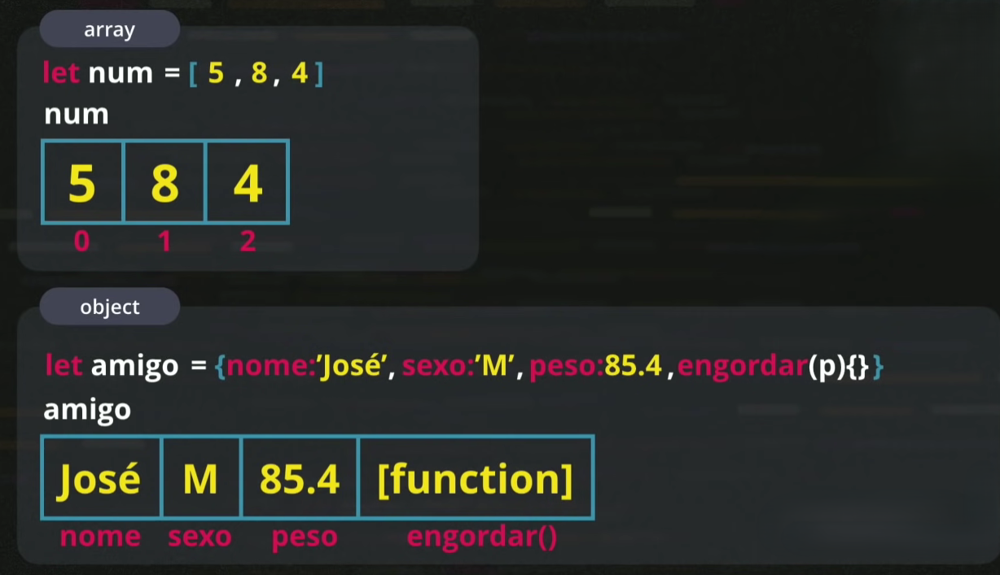

•Arreys no js são heterogêneos, aceitam valores de tipos diferentes;
•Porém, grande problema das variáveis compostas é que o índice fica fixo.

•Para declarar um arrey, usamos os [] (colchetes), para declarar um objeto, usamos {} (chaves);

Ex.:
let amigo = {nome:'José', , , }
•A primeira casa vai se chamar nome, e não 0(não vai ter a chave 0, mas sim "nome"), vai ter um identificador literal.

let amigo = {nome:'José', sexo:'M', , }
Atributo do objeto sexo com valor M(masculino).

let amigo = {nome:'José', sexo:'M', peso:85.4, }
Vai criar um elemento, um atributo peso e vai colocar o valor lá dentro.

•Até o momento, o objeto já é mais detalhado, já tem mais possibilidades do que o arrey que está representado na foto:
 <!-- aprendi como faz pra botar o link de uma imagem, legal -->

let amigo = {nome:'José', sexo:'M', peso:85.4, engordar(p){}}
Eu estou criando engordar com parâmetro p abre e fecha chaves; 
O que eu estou criando é um item engordar que tem uma função dentro;
•Os objetos são variáveis(variável guarda valores), só que além de guardar valores(que são os atributos), objetos podem guardar funcionalidades(que chamamos de métodos).